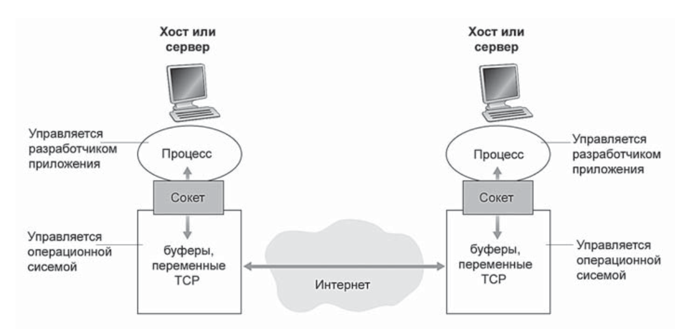

Ключевую часть разработки сетевых приложений составляет написание программ, которые работают на различных конечных системах и общаются друг с другом по сети. Например, веб-приложение — это две различные программы, взаимодействующие друг с другом: браузер, запущенный на хосте пользователя (настольном компьютере, ноутбуке, планшете, смартфоне и так далее), и веб-сервер, работающий на серверном хосте.
Другой пример — это одноранговые системы совместного доступа к файлам, где на каждом из хостов, который участвует в файловом обмене, запущена такая программа. В этом случае программы на различных хостах могут быть аналогичными или даже идентичными.
Важно отметить здесь, что вам не нужно писать программное обеспечение для устройств, составляющих ядро сети, таких как маршрутизаторы или коммутаторы канального уровня. Но даже если бы вы и задались такой целью, вы бы не смогли это сделать, т.к. данные устройства функционируют не на прикладном уровне, а на сетевом и более низких уровнях
С точки зрения разработчика приложения, архитектура сети постоянна и предлагает определенный набор служб приложениям. С другой стороны, архитектура приложения создается разработчиком этого приложения и определяет, каким образом оно будет строиться на различных конечных системах. Выбирая архитектуру приложения, разработчик, скорее всего, выберет одну из двух доминирующих архитектурных парадигм, используемых в современной разработке сетевых приложений: клиент-серверная или одноранговая (P2P).
Доминирующие архитектурные парадигмы для сетевых приложений:
Преимуществом одноранговой архитектуры является ее самомасштабируемость, т.к. вычислительные/накопительные мощности системы растут по мере роста аудитории.
Проблемы одноранговой архитектуры:
Процесс - программа, запущенная на конечной системе. Когда процессы работают на одном хосте, то они взаимодействуют друг с другом с помощью средств межпроцессного взаимодествия. Как же взаимодестйвуют процессы на разных хостах?
Процессы на двух хостаз взаимодествуют друг с другом обмениваясь сообщениями через сеть. Например, в веб-приложении процесс браузера клиента обменивается сообщениями с процессом веб-сервера. В случае P2P файлообменной сети процесс одного хоста преедает файл в процесс другого хоста.
В контексте сеанса взаимодествия между парой процессов тот, который инициирует взаимодествие (т.е. первым контактирует с другим процессом в начале сеанса), обозначается как клиентский.
Процесс, который ожидает контакта для начала сеанса, называется серверными.
Процессы отправляют и принимают сообщения через программный интерфейс, называемый сокетом. Рассмотрим аналогию для лучшего понимания процессов и сокетов. Процесс аналогичен дому, а его сокет подобен двери в этом доме. Когда процесс пытается отправить сообщение другому процессу на удаленном хосте, он «проталкивает» сообщение через свою дверь (сокет). Такая отправка предполагает, что с другой стороны этой двери существует некоторая транспортная инфраструктура, которая организует доставку сообщения до двери процесса назначения. Когда сообщение прибывает на хост назначения, оно проходит через дверь принимающего процесса (через сокет). Принимающий процесс затем обрабатывает это сообщение.
Сокет - это API между сетевыми приложениями и сетью (протоколом транпортного уровня).
Разработчик управляет всем, что находится на прикладном уровне сокета, но со стороны транспортного уровня он управляет лишь:
Когда запущенный на одном хосте процесс пытается отправить пакеты процессу, работающему на другом хосте, то необходимо знать адрес второго процесса. Для идентификации процесса-получателя необходима информация о двух вещах:
Критерии выбора транспортного протокола
TCP/IP-сети предоставляют приложениям 2 транспортных протокола - UDP и TCP.
TCP (Transmission Control Protocol) - это один из основных протоколов передачи данных интернета. Модель обслуживания протокола TCP включает службу установления логического соединения и службу надежной передачи данных
Ниже приведены требования к службам, предъявляемые определенными сетевыми приложениями:
| Приложение | Потери данных | Пропускная способность | Чувствительность к потере данных |
|---|---|---|---|
| Передача файлов/загрузка | Не допускаются | Эластичная | Нет |
| Электронная почта | Не допускаются | Эластичная | Нет |
| Веб-документы | Не допускаются | Эластичная (несколько Кбит/ с) |
Нет |
| IP-телефония/Видео-конференции | Допускаются |
|
Да, сотни миллисекунд |
| Потоковый аудио и видеоконтент | Допускаются |
|
Да, нексколько миллисекунд |
| Интерактивные игры | Допускаются | От нескольких до 10 Кбит/с | Да, сотни миллисекунд |
| Мгновенные сообщения | Не допускаются | Эластичная | Да и нет |
Передача с установлением соединения. Происходит рукопожатие между клиентом и сервером. Протокол TCP обеспечивает обмен управляющей информацией между клиентом и сервером на транспортном уровне. Это дает клиенту и серверу возможность подготовиться к началу обмена. В итоге между сокетами клиентского и серверного процессов устанавливается TCP-соединение. Это соединение является дуплексным, т.е. оба процесса могут передавать данные друг другу в одно и то же время. Когда приложение завершит передачу, то соединение будет разорвано.
Надежная передача данных. Процессы взаимодействующие по протоколу TCP могут быть уверены, что данные будут доставлены без ошибок и в строго определенном порядке.
(Не)безопасноть протокола TCP. TCP и UDP не предоставляют службы шифрования передаваемых данных. Отправленные передающим процессом данные в сокет принимающего процесса идентичны как на этапе отправления, так и на этапе доставки. Так, например, текстовый пароль будет переходить все линии связи на пути от отправителя к получателю и потому может стать уязвимым для перехвата.
Соображения по поводу небезопасности TCP навели сообщество на разработку криптографического протокола SSL (Secure Sockets Layer), или уровеня защищенных сокетов, как доработку протокола TCP. TCP+SSL обеспечивает шифрование, контроль целостности данных и конечную аутентификацию.
UDP представляет собой простой протокол транспортного уровня, предлагающий минимальный набор служб. UDP является протоколом без установления соединения, то есть процедуры рукопожатия перед тем, как два процесса начинают взаимодействовать, не происходит. UDP обеспечивает ненадежную передачу данных — другими словами, когда процесс отправляет сообщение в сокет UDP, нет никакой гарантии, что сообщение будет получено принимающим процессом. Более того, сообщения могут поступать в принимающий процесс в произвольном порядке.
В таблице ниже показаны популярные транспортные протоколы.
| Приложение | Протокол прикладного уровня | Базовый транспортный протокол |
|---|---|---|
| Электронная почта | SMTP | TCP |
| Удаленный терминальный доступ | Telnet | TCP |
| Всемирная паутина | HTTP | TCP |
| Передача файлов | FTP | TCP |
| Потоковый мультимедийный контент | HTTP | TCP |
| IP-телефония | SIP, RTP или проприетарное | UDP или TCP |
Как несложно заметить, абсолютное большинство приложений используют TCP в качестве своего базового транспортного протокла. Это свяазно с тем, что он обеспечивает надежную передачу данных, гарантируя что вс еданные в итоге доберуться до получаетлся в целостности и сохранности.
Исключением является IP-телефония, которая допускает некоторые потери данных, но требуют для своей работы некоторого минимальной скорости передачи, поэтому разработчики обычно предпочитают UDP, избегая тем самым механизма управления перегрузкой и дополнительных затрат на гарантированную доставку пакетов, присущих протоколу TCP. Возможность TCP всключается как резерв на всякий случай, т.к. многие брандмауэры настроены на блокировку UDP-трафика
ПротоколЫ прикладного уровня, которые определяют как прикладные процессы, запущенные на различных конечных системах, передают друг другу сообщения. В частности, протокол прикладного уровня определяет:
Общедоступные протоколы описаны в документах RFC. Таким образом, если разработчик браузера следует правилам RFC по поводу протокла HTTP, то он будет способен в этом браузере загрузить любую веб-страницу, сервер которой соответсвует правилам RFC по поводу протокла HTTP.
Заметим разницу между понятиями сетевого приложения и протокола прикладного уровня.